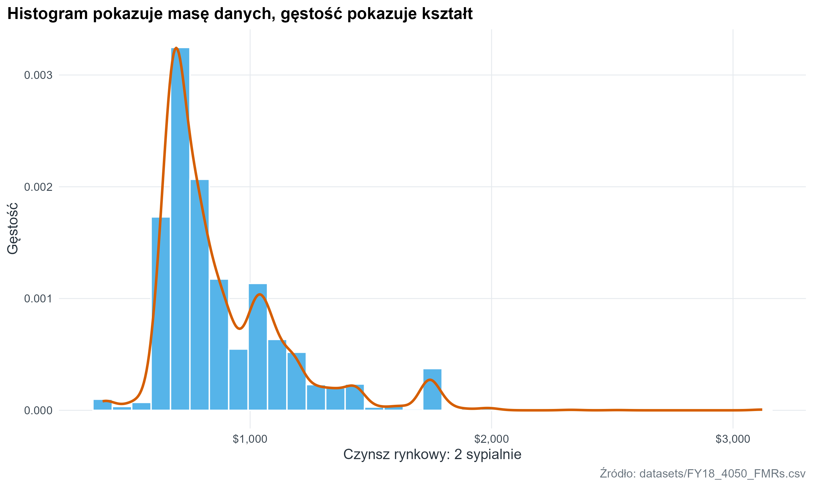
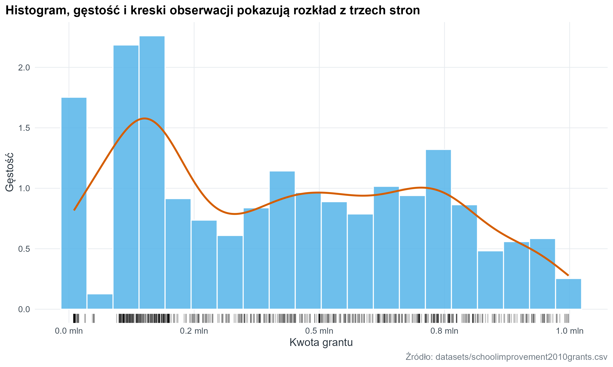
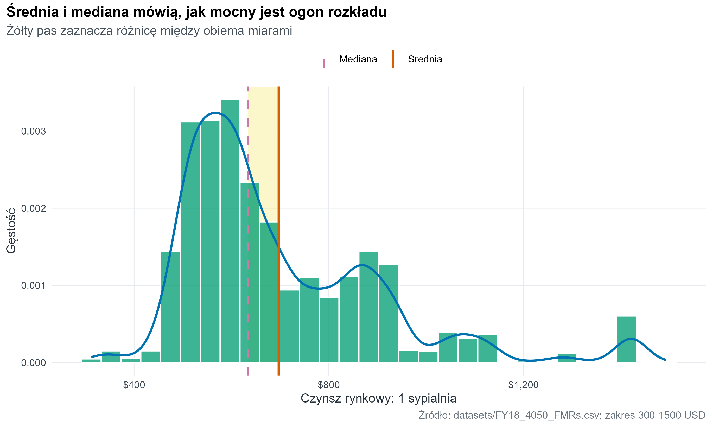
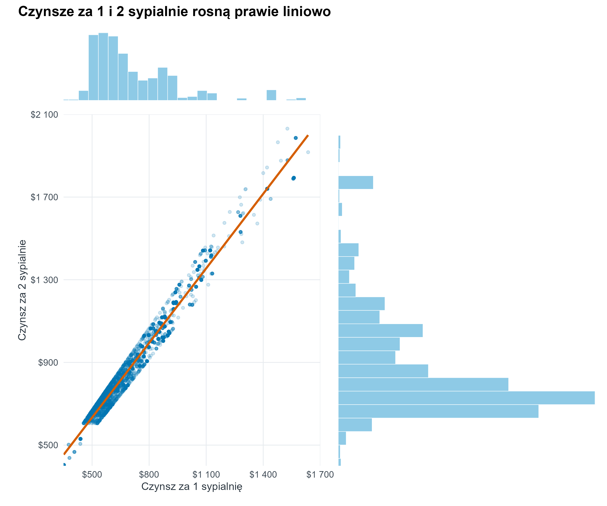
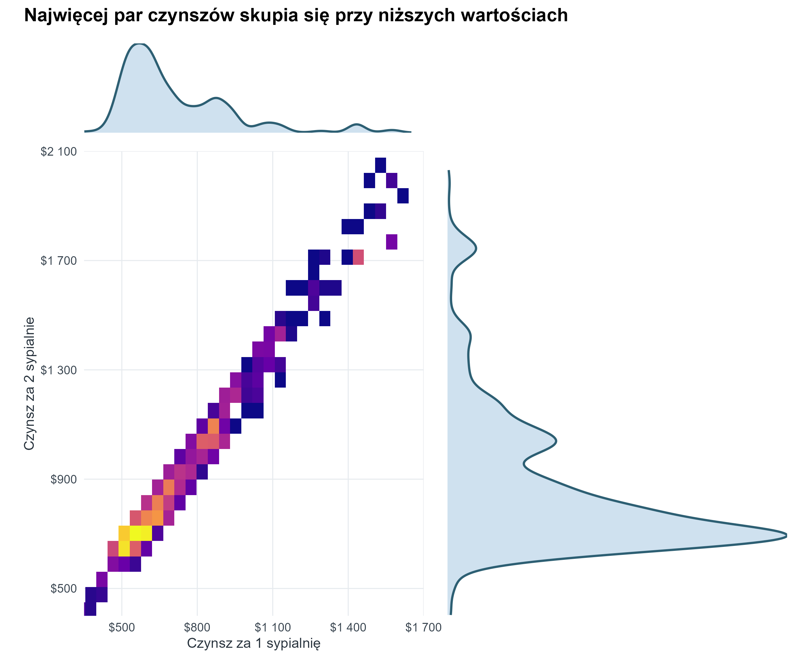
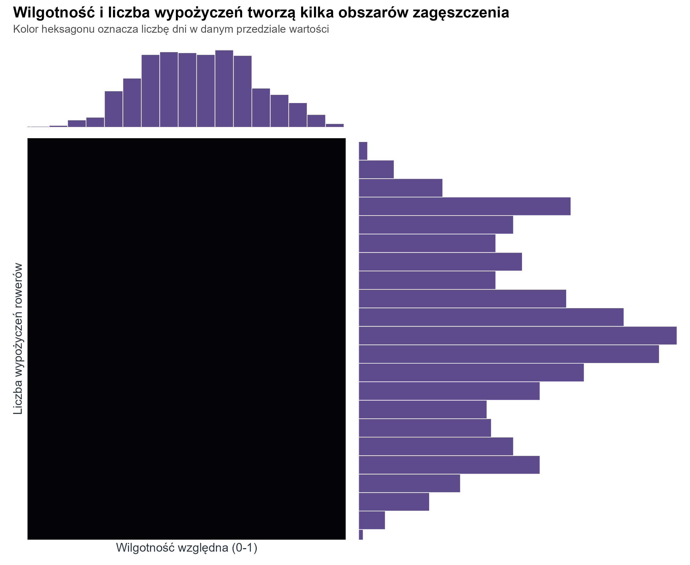
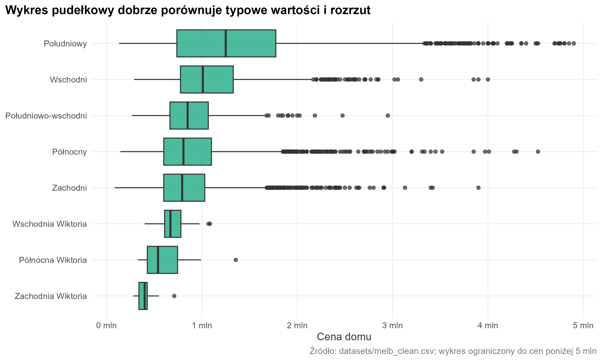
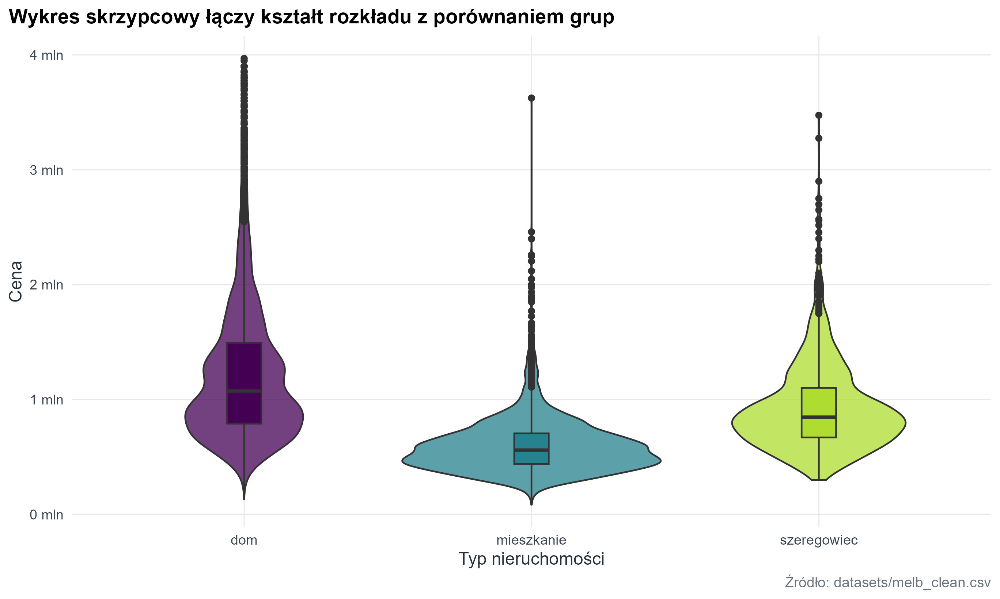

library(tidyverse)
library(here)
library(janitor)
library(patchwork)
source(here("R", "theme_course.R"))
theme_set(theme_course())4 Rozkłady i obserwacje odstające
Rozkłady odpowiadają na pytania: jakie wartości są typowe, jak szeroki jest zakres i czy dane mają ogon lub obserwacje odstające. To zwykle najlepszy punkt startu, zanim zaczniemy porównywać grupy.
fmr <- readr::read_csv(here("datasets", "FY18_4050_FMRs.csv"), show_col_types = FALSE) |>
janitor::clean_names()
melb <- readr::read_csv(here("datasets", "melb_clean.csv"), show_col_types = FALSE) |>
janitor::clean_names() |>
select(-any_of("x1")) |>
mutate(
price_m = price / 1000000,
region = recode(
region,
Northern = "Północny",
Western = "Zachodni",
Southern = "Południowy",
Eastern = "Wschodni",
`South-Eastern` = "Południowo-wschodni",
`Eastern Victoria` = "Wschodnia Wiktoria",
`Northern Victoria` = "Północna Wiktoria",
`Western Victoria` = "Zachodnia Wiktoria"
),
type = recode(type, h = "dom", u = "mieszkanie", t = "szeregowiec")
)
school_grants <- readr::read_csv(
here("datasets", "schoolimprovement2010grants.csv"),
show_col_types = FALSE
) |>
janitor::clean_names() |>
select(-any_of("x1")) |>
filter(!is.na(award_amount)) |>
mutate(
award_amount_m = award_amount / 1000000,
model_selected = factor(
recode(
model_selected,
Closure = "Zamknięcie",
Restart = "Restart",
Turnaround = "Restrukturyzacja",
Transformation = "Transformacja"
),
levels = c("Zamknięcie", "Restart", "Restrukturyzacja", "Transformacja")
)
)
bike_share <- readr::read_csv(
here("datasets", "bike_share.csv"),
show_col_types = FALSE
)4.1 Histogram i wykres gęstości (density plot)
fmr |>
ggplot(aes(x = fmr_2)) +
geom_histogram(aes(y = after_stat(density)), bins = 35, fill = "#56B4E9", color = "white") +
geom_density(colour = "#D55E00", linewidth = 1) +
scale_x_continuous(labels = scales::label_dollar()) +
labs(
title = "Histogram pokazuje masę danych, gęstość pokazuje kształt",
x = "Czynsz rynkowy: 2 sypialnie",
y = "Gęstość",
caption = "Źródło: datasets/FY18_4050_FMRs.csv"
)
4.2 Histogram, gęstość i kreski obserwacji (rug plot)
W R ten widok składamy jawnie z kilku warstw: histogramu, wykresu gęstości (density plot) i krótkich kresek pokazujących pojedyncze obserwacje (rug plot). Każda warstwa odpowiada na trochę inne pytanie o rozkład.
school_grants |>
ggplot(aes(x = award_amount_m)) +
geom_histogram(
aes(y = after_stat(density)),
bins = 20,
fill = "#56B4E9",
colour = "white",
alpha = 0.86
) +
geom_density(colour = "#D55E00", linewidth = 1) +
geom_rug(alpha = 0.25, sides = "b") +
scale_x_continuous(labels = scales::label_number(suffix = " mln", accuracy = 0.1)) +
labs(
title = "Histogram, gęstość i kreski obserwacji pokazują rozkład z trzech stron",
x = "Kwota grantu",
y = "Gęstość",
caption = "Źródło: datasets/schoolimprovement2010grants.csv"
)
fmr_one_bed <- fmr |>
filter(!is.na(fmr_1), dplyr::between(fmr_1, 300, 1500))
fmr_one_bed_stats <- fmr_one_bed |>
summarise(
mean_rent = mean(fmr_1),
median_rent = median(fmr_1)
)
fmr_one_bed |>
ggplot(aes(x = fmr_1)) +
geom_rect(
data = fmr_one_bed_stats,
aes(
xmin = pmin(mean_rent, median_rent),
xmax = pmax(mean_rent, median_rent)
),
ymin = 0,
ymax = Inf,
fill = "#F0E442",
alpha = 0.28,
inherit.aes = FALSE
) +
geom_histogram(
aes(y = after_stat(density)),
bins = 30,
fill = "#009E73",
colour = "white",
alpha = 0.76
) +
geom_density(colour = "#0072B2", linewidth = 1) +
geom_vline(
data = fmr_one_bed_stats,
aes(xintercept = median_rent, linetype = "Mediana"),
colour = "#CC79A7",
linewidth = 1
) +
geom_vline(
data = fmr_one_bed_stats,
aes(xintercept = mean_rent, linetype = "Średnia"),
colour = "#D55E00",
linewidth = 1
) +
scale_linetype_manual(values = c("Mediana" = "dashed", "Średnia" = "solid"), name = NULL) +
scale_x_continuous(labels = scales::label_dollar()) +
labs(
title = "Średnia i mediana mówią, jak mocny jest ogon rozkładu",
subtitle = "Żółty pas zaznacza różnicę między obiema miarami",
x = "Czynsz rynkowy: 1 sypialnia",
y = "Gęstość",
caption = "Źródło: datasets/FY18_4050_FMRs.csv; zakres 300-1500 USD"
)
4.3 Wykres łączony: relacja i rozkłady brzegowe
Taki widok traktujemy jako kompozycję trzech elementów: głównego wykresu relacji oraz dwóch małych rozkładów brzegowych na osiach. Dzięki temu jednocześnie widać zależność między zmiennymi i kształt każdego rozkładu osobno.
fmr_joint <- fmr |>
filter(
!is.na(fmr_1),
!is.na(fmr_2)
)
rent_x_limits <- c(350, 1700)
rent_y_limits <- c(400, 2100)
rent_label <- scales::label_number(prefix = "$", big.mark = " ", accuracy = 1)
joint_plot_theme <- theme(
axis.title = element_text(size = 10.5),
axis.text = element_text(size = 9),
plot.margin = margin(8, 12, 8, 12)
)
joint_margin_theme <- theme_void() +
theme(plot.margin = margin(2, 6, 2, 6))
fmr_joint_visible <- fmr_joint |>
filter(
dplyr::between(fmr_1, rent_x_limits[1], rent_x_limits[2]),
dplyr::between(fmr_2, rent_y_limits[1], rent_y_limits[2])
)
joint_scatter <- fmr_joint_visible |>
ggplot(aes(x = fmr_1, y = fmr_2)) +
geom_point(alpha = 0.18, size = 1.1, colour = "#0072B2") +
geom_smooth(method = "lm", se = FALSE, colour = "#D55E00", linewidth = 1) +
coord_cartesian(xlim = rent_x_limits, ylim = rent_y_limits, expand = FALSE) +
scale_x_continuous(
labels = rent_label,
breaks = seq(500, 1700, by = 300)
) +
scale_y_continuous(
labels = rent_label,
breaks = seq(500, 2100, by = 400)
) +
labs(
x = "Czynsz za 1 sypialnię",
y = "Czynsz za 2 sypialnie"
) +
joint_plot_theme
joint_hist_x <- fmr_joint_visible |>
ggplot(aes(x = fmr_1)) +
geom_histogram(bins = 26, fill = "#8ECAE6", colour = "white", linewidth = 0.2) +
coord_cartesian(xlim = rent_x_limits, expand = FALSE) +
joint_margin_theme
joint_hist_y <- fmr_joint_visible |>
ggplot(aes(x = fmr_2)) +
geom_histogram(bins = 26, fill = "#8ECAE6", colour = "white", linewidth = 0.2) +
coord_flip(xlim = rent_y_limits, expand = FALSE) +
joint_margin_theme
((joint_hist_x + plot_spacer()) /
(joint_scatter + joint_hist_y)) +
plot_layout(widths = c(5.8, 1.15), heights = c(1, 5.2)) +
plot_annotation(
title = "Czynsze za 1 i 2 sypialnie rosną prawie liniowo",
theme = theme(plot.title = element_text(face = "bold", size = 14, margin = margin(b = 8)))
)
joint_binned <- fmr_joint_visible |>
ggplot(aes(x = fmr_1, y = fmr_2)) +
geom_point(alpha = 0, size = 0, show.legend = FALSE) +
geom_bin_2d(bins = 30, show.legend = FALSE) +
coord_cartesian(xlim = rent_x_limits, ylim = rent_y_limits, expand = FALSE) +
scale_fill_viridis_c(
option = "C",
trans = "sqrt"
) +
scale_x_continuous(
labels = rent_label,
breaks = seq(500, 1700, by = 300)
) +
scale_y_continuous(
labels = rent_label,
breaks = seq(500, 2100, by = 400)
) +
labs(
x = "Czynsz za 1 sypialnię",
y = "Czynsz za 2 sypialnie"
) +
joint_plot_theme
joint_density_x <- fmr_joint_visible |>
ggplot(aes(x = fmr_1)) +
geom_density(fill = "#BFD7EA", colour = "#2D5F73", alpha = 0.75, linewidth = 0.8) +
coord_cartesian(xlim = rent_x_limits, expand = FALSE) +
joint_margin_theme
joint_density_y <- fmr_joint_visible |>
ggplot(aes(x = fmr_2)) +
geom_density(fill = "#BFD7EA", colour = "#2D5F73", alpha = 0.75, linewidth = 0.8) +
coord_flip(xlim = rent_y_limits, expand = FALSE) +
joint_margin_theme
((joint_density_x + plot_spacer()) /
(joint_binned + joint_density_y)) +
plot_layout(widths = c(5.8, 1.15), heights = c(1, 5.2)) +
plot_annotation(
title = "Najwięcej par czynszów skupia się przy niższych wartościach",
theme = theme(plot.title = element_text(face = "bold", size = 14, margin = margin(b = 8)))
)
4.4 Heksagony i histogramy brzegowe
Gdy punktów jest dużo albo wartości nachodzą na siebie, pojedyncze kropki mogą ukrywać zagęszczenia. Wtedy dobrym wyborem jest wykres heksagonalny (hexbin plot): płaszczyzna jest dzielona na sześciokąty, a kolor pokazuje liczbę obserwacji w każdym z nich. Histogramy brzegowe dopowiadają, jak rozkłada się każda zmienna osobno.
bike_hex_limits <- list(
x = c(0.2, 1),
y = c(0, 9000)
)
bike_axis_theme <- theme(
panel.grid = element_line(colour = "#2D2D35", linewidth = 0.25),
panel.background = element_rect(fill = "#050509", colour = NA),
plot.background = element_rect(fill = "white", colour = NA),
axis.title = element_text(size = 11),
axis.text = element_text(size = 9),
plot.margin = margin(4, 6, 4, 6)
)
bike_margin_theme <- theme_void() +
theme(plot.margin = margin(2, 6, 2, 6))
bike_hex <- bike_share |>
ggplot(aes(x = hum, y = total_rentals)) +
geom_hex(bins = 22, colour = "#050509", linewidth = 0.15, show.legend = FALSE) +
scale_fill_viridis_c(option = "magma", trans = "sqrt") +
coord_cartesian(xlim = bike_hex_limits$x, ylim = bike_hex_limits$y, expand = FALSE) +
scale_x_continuous(labels = scales::label_number(accuracy = 0.1)) +
scale_y_continuous(labels = scales::label_number(big.mark = " ")) +
labs(
x = "Wilgotność względna (0-1)",
y = "Liczba wypożyczeń rowerów"
) +
bike_axis_theme
bike_humidity_hist <- bike_share |>
ggplot(aes(x = hum)) +
geom_histogram(bins = 22, fill = "#5E4B8B", colour = "white", linewidth = 0.25) +
coord_cartesian(xlim = bike_hex_limits$x, expand = FALSE) +
bike_margin_theme
bike_rentals_hist <- bike_share |>
ggplot(aes(x = total_rentals)) +
geom_histogram(bins = 22, fill = "#5E4B8B", colour = "white", linewidth = 0.25) +
coord_flip(xlim = bike_hex_limits$y, expand = FALSE) +
bike_margin_theme
((bike_humidity_hist + plot_spacer()) /
(bike_hex + bike_rentals_hist)) +
plot_layout(widths = c(5.4, 1.05), heights = c(1, 5.2)) +
plot_annotation(
title = "Wilgotność i liczba wypożyczeń tworzą kilka obszarów zagęszczenia",
subtitle = "Kolor heksagonu oznacza liczbę dni w danym przedziale wartości",
theme = theme(
plot.title = element_text(face = "bold", size = 14, margin = margin(b = 4)),
plot.subtitle = element_text(size = 10, colour = "#4A4A4A", margin = margin(b = 8))
)
)
4.5 Wykres pudełkowy (boxplot) dla porównań
melb |>
filter(!is.na(region), !is.na(price_m), price_m < 5) |>
mutate(region = forcats::fct_reorder(region, price_m, .fun = median, na.rm = TRUE)) |>
ggplot(aes(x = price_m, y = region)) +
geom_boxplot(fill = "#009E73", alpha = 0.7, outlier_alpha = 0.25) +
scale_x_continuous(labels = scales::label_number(suffix = " mln")) +
labs(
title = "Wykres pudełkowy dobrze porównuje typowe wartości i rozrzut",
x = "Cena domu",
y = NULL,
caption = "Źródło: datasets/melb_clean.csv; wykres ograniczony do cen poniżej 5 mln"
)
4.6 Wykres skrzypcowy (violin plot)
melb |>
filter(!is.na(type), !is.na(price_m), price_m < 4) |>
ggplot(aes(x = type, y = price_m, fill = type)) +
geom_violin(trim = TRUE, alpha = 0.75, show.legend = FALSE) +
geom_boxplot(width = 0.12, outlier_alpha = 0.2, show.legend = FALSE) +
scale_fill_course_d() +
scale_y_continuous(labels = scales::label_number(suffix = " mln")) +
labs(
title = "Wykres skrzypcowy łączy kształt rozkładu z porównaniem grup",
x = "Typ nieruchomości",
y = "Cena",
caption = "Źródło: datasets/melb_clean.csv"
)
4.7 Zadanie
Dla fmr_1, fmr_2 i fmr_3 przygotuj trzy histogramy w jednym widoku. Podpowiedź: użyj pivot_longer() i podziel wynik na panele przez facet_wrap().